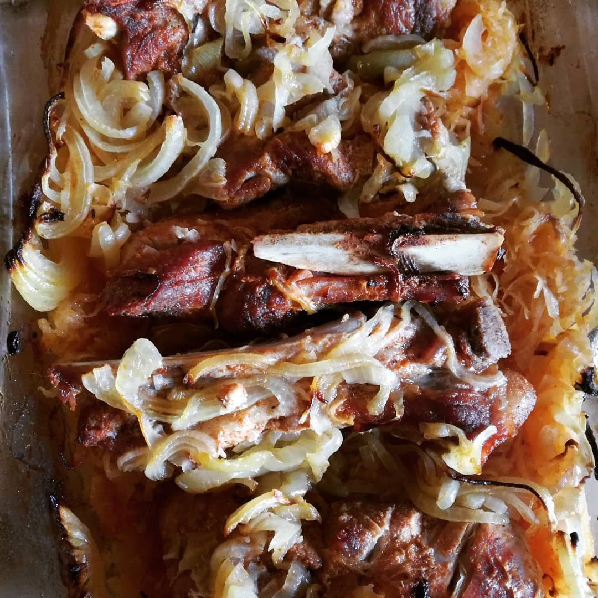

Kapusta podľa @paulinafront — Normy Jedál
Żeberka w kapuście kiszonej 👌
#zeberka#zeberkatrojkaty#kapusta#kapustakiszona#zeberkawkapuscie#cebula#przyprawy#pieczone#pieczonewpiekarniku#obiad#dobryobiad#dlarodziny#familia#gotuje#lubiegotowac#jestsmacznie